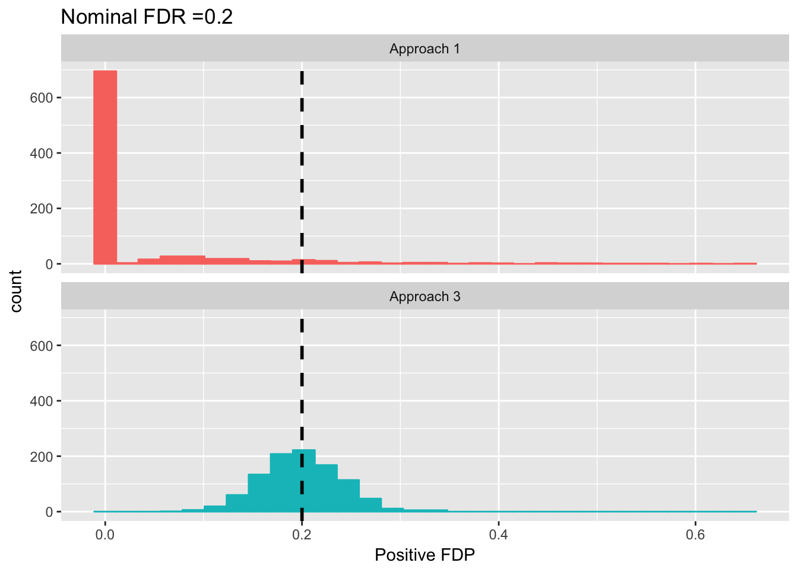
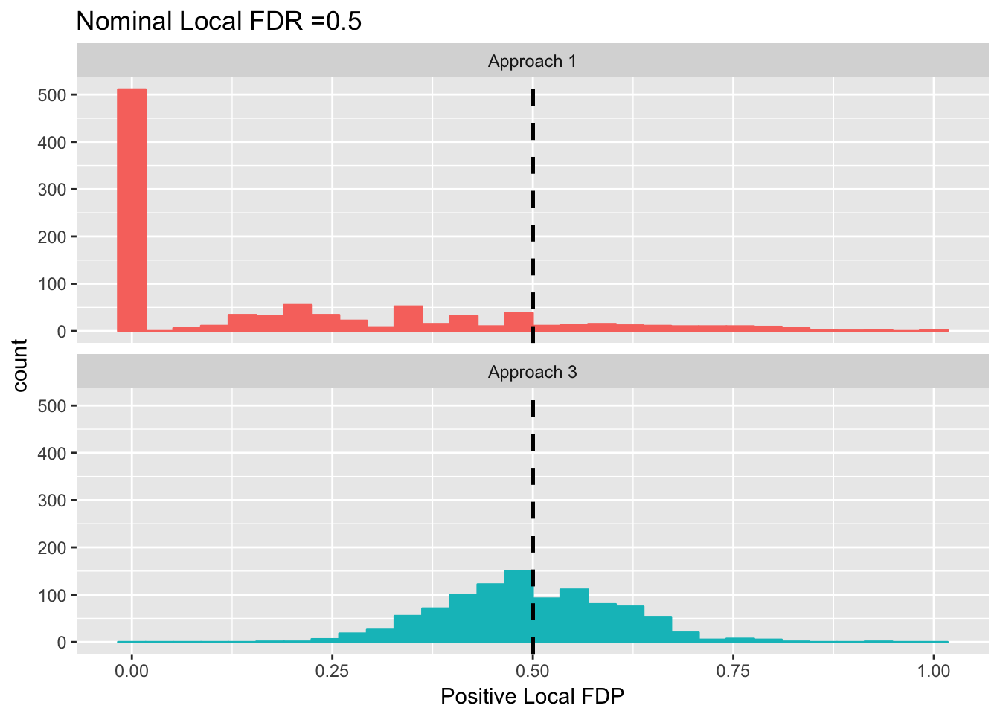

Last updated: 2018-10-07
workflowr checks: (Click a bullet for more information) ✔ R Markdown file: up-to-date
Great! Since the R Markdown file has been committed to the Git repository, you know the exact version of the code that produced these results.
✔ Environment: empty
Great job! The global environment was empty. Objects defined in the global environment can affect the analysis in your R Markdown file in unknown ways. For reproduciblity it’s best to always run the code in an empty environment.
✔ Seed:
set.seed(12345)
The command set.seed(12345) was run prior to running the code in the R Markdown file. Setting a seed ensures that any results that rely on randomness, e.g. subsampling or permutations, are reproducible.
✔ Session information: recorded
Great job! Recording the operating system, R version, and package versions is critical for reproducibility.
✔ Repository version: 490e0ab
wflow_publish or wflow_git_commit). workflowr only checks the R Markdown file, but you know if there are other scripts or data files that it depends on. Below is the status of the Git repository when the results were generated:
Ignored files:
Ignored: .DS_Store
Ignored: .Rhistory
Ignored: .Rproj.user/
Ignored: analysis/.DS_Store
Ignored: analysis/cash_paper_fig_leukemia_cache/
Ignored: data/LSI/
Ignored: docs/.DS_Store
Ignored: docs/figure/.DS_Store
Ignored: output/fig/
Ignored: output/paper/
| File | Version | Author | Date | Message |
|---|---|---|---|---|
| rmd | 490e0ab | Lei Sun | 2018-10-07 | wflow_publish(c(“decor_post.rmd”, “cash_paper_fig1.rmd”)) |
There is a under-appreciated aspect of cashr: the decorrelation of posterior helps make FDP less variable.
In a hierarchical Bayesian model with correlated likelihoods, \[\begin{align} \theta_j &\overset{iid}{\sim} g(\cdot) \\ X_j \mid \theta_j &\sim p(X_j \mid \theta_j) \text{ correlated} \ , \end{align}\] the posterior \(p(\theta_j\mid X_j)\) should also be correlated. Actually, the joint posterior distribution should be written as \(p(\theta_1, \ldots, \theta_p \mid X_1, \ldots, X_p)\), where \(\theta_1, \ldots, \theta_p\) are not independent.
In many high dimensional statistical inference, the selection statement is based on the marginal distribution, such as “select \(j\) if \(p(\theta_j = 0\mid X_j) \le 0.1\).” However, FDP is concerned with simultaneous validity; that is, how many events \(\theta_j = 0\mid X_j\) actually happened in the discovery set? With a correlated joint posterior, even the joint posterior, and therefore the marginals, are perfectly correct, the number of events \(\theta_j = 0\mid X_j\) happening in a given set (now for convenience let’s suppose the discovery set is given) could be far more variable than a Binomial. It may lead to a very variable FDP.
Let’s say we have a posterior distribution \(p(\theta_1, \ldots, \theta_p \mid X_1, \ldots, X_p)\) which is absolutely continuous, with no point mass at the origin or elsewhere. We want to come up with \(p\) \(95\%\) credible intervals, each for each \(\theta_j\). Now we are concerned with the simultaneous coverage of these intervals; that is, out of \(p\), how many of them actually cover their true \(\theta_j\)? Let’s assume the data are indeed generated from a Bayesian mechanism and the priors are exact, so that the credible intervals are valid marginally for each \(j\).
If we have an independent joint posterior, it’s clear that the number of false coverage should be a Bernoulli\((p, 0.05)\) random variable. But if the joint posterior is not independent and the correlation cannot be ignored in some sense, the number of false coverage would be much more variable than that.
Of course in this setting, the solution is to use a \(p\)-dimensional credible set or credible region to get a valid simultaneous coverage. But it has two problems. First, there seems no counterpart concept in variable selection or multiple testing, like “select 1, 3, 5 if also select 2, 6 but no 3 if 4 is selected.” Second, in a high dimensional setting with \(p = 10^4\) and the joint posterior is complicated, a \(p\)-dimensional credible set wouldn’t be very practical anyway. Thus, validly decorrelating the posterior would be very helpful. With the exchangeable correlated standard normal model, cashr offers a way.
Suppose we know \[\begin{align} \theta_1, \ldots, \theta_{p} &\overset{iid}{\sim} g := 0.9\delta_0 + 0.1N(0, 1) \\ [X_1, \ldots, X_p]' &\sim N \left( [\theta_1, \theta_p]', \Sigma = \begin{bmatrix} 1 & 0.5 & \cdots & 0.5 \\ 0.5 & 1 & \cdots & 0.5 \\ \vdots & \vdots & \ddots & \vdots \\ 0.5 & 0.5 & \cdots & 1 \\ \end{bmatrix} \right) \end{align}\] where \(p = 10^4\). The goal is to choose those \(\theta_j \neq 0\) at the nominal FDR \(= 0.1\).
Now we consider three approaches.
This is a valid posterior null probability, but it has two issues: (1) it doesn’t consider other observations \(X_k\); (2) the event \(\theta_j \mid X_j\) and \(\theta_k \mid X_k\) are highly dependent. So for a given nominal FDR or local FDR, the false discovery proportion would be highly variable.
For example, let’s say
Mathematically the joint posterior \(p(\theta_1, \ldots, \theta_p \mid X_1, \ldots, X_p, g, \Sigma)\) is hard to write. In the literature one approach is to introduce the indicator variable \(I_j := I(\theta_j \neq 0)\) and write the marginal local FDR as \[ p(\theta_j = 0\mid X_1, \ldots, X_p, g, \Sigma) = p(I_j = 0\mid X_1, \ldots, X_p, g, \Sigma) = \frac{ \sum_{I_1, \ldots, I_j = 0, \ldots, I_p}0.9^{p - \sum I_j}0.1^{\sum I_j}N\left(X \mid 0, \Sigma + \begin{bmatrix}I_1 & & \\ & \ddots & \\ & & I_p\end{bmatrix}\right) }{ \sum_{I_1, \ldots, I_j, \ldots, I_p}0.9^{p - \sum I_j}0.1^{\sum I_j}N\left(X \mid 0, \Sigma + \begin{bmatrix}I_1 & & \\ & \ddots & \\ & & I_p\end{bmatrix}\right) } \]
This approach should be better than the first but also has two issues: (1) it is impossible to compute as it needs to sum up \(2^p\) terms; (2) it is only the marginal local FDR, where the happenstance of \(\theta_i = 0\mid X, g, \Sigma\) would affect the probability of the happenstance of \(\theta_j = 0\mid X, g, \Sigma\), so the simultaneous false discovery proportion of a discovery set formed based on this would be variable.
In the spirit of cashr, the model can be re-written as \[\begin{align}
\theta_1, \ldots, \theta_{p} &\overset{iid}{\sim} g := 0.9\delta_0 + 0.1N(0, 1) \\
X_j &= \theta_j + Z_j \\
\end{align}\] And, the empirical distribution of realized \(Z_1, \ldots, Z_n\) should be \(N(Z/\sqrt{2}, 1/\sqrt{2}^2)\) with \(Z\) being a \(N(0, 1)\) random variable.
Now suppose we are told by an oracle the value of \(Z\), essentially the correlated noise distribution, in our data set, and then the model becomes \[\begin{align} \theta_1, \ldots, \theta_{p} &\overset{iid}{\sim} g := 0.9\delta_0 + 0.1N(0, 1) \\ X_j &\sim N(\theta_j + Z/\sqrt{2}, 1/\sqrt{2}^2) \end{align}\] Note that the likelihoods are no longer correlated, and we can base our inference on \[ p(\theta_j \mid X_j, g, \Sigma, Z) = \frac{ 0.9 N(X_j\mid Z/\sqrt{2}, \sqrt{1 / 2}^2) }{ 0.9 N(X_j\mid Z/\sqrt{2}, \sqrt{1 / 2}^2) + 0.1 N(X_j\mid Z/\sqrt{2}, \sqrt{3 / 2}^2) } \]
It’s easy to compute, and because of the decorrelation, the FDP should be less variable.
Since Approach 2 is hard to compute, we now only compare Approach 1 and 3.
lfdr_1 <- function (X) {
return((0.9 * dnorm(X)) / (0.9 * dnorm(X) + 0.1 * dnorm(X, 0, sqrt(2))))
}
lfdr_3 <- function (X, Z) {
return((0.9 * dnorm(X, Z / sqrt(2), sqrt(1 / 2))) / (0.9 * dnorm(X, Z / sqrt(2), sqrt(1 / 2)) + 0.1 * dnorm(X, Z / sqrt(2), sqrt(3 / 2))))
}
FDP_lfdr <- function (lfdr, q, theta) {
qval <- ashr::qval.from.lfdr(lfdr)
sel <- (qval <= q)
FDP <- sum(theta[sel] == 0) / length(theta[sel])
return(FDP)
}
LFDP_lfdr <- function (lfdr, q, theta, lower = 0.95, upper = 1.05) {
sel <- (lfdr >= q * lower) & (lfdr <= q * upper)
LFDP <- sum(theta[sel] == 0) / length(theta[sel])
return(LFDP)
}FDP_comparison <- function (nominal.FDR) {
theta <- sample(c(rep(0, 9e3), rnorm(1e3)))
Z <- rnorm(1)
E <- Z / sqrt(2) + rnorm(1e4, 0, 1 / sqrt(2))
X <- theta + E
lfdr_1_res <- lfdr_1(X)
FDP_1 <- FDP_lfdr(lfdr_1_res, nominal.FDR, theta)
lfdr_3_res <- lfdr_3(X, Z)
FDP_3 <- FDP_lfdr(lfdr_3_res, nominal.FDR, theta)
return(c(FDP_1 = FDP_1, FDP_3 = FDP_3))
}
LFDP_comparison <- function (nominal.lfdr) {
theta <- sample(c(rep(0, 9e3), rnorm(1e3)))
Z <- rnorm(1)
E <- Z / sqrt(2) + rnorm(1e4, 0, 1 / sqrt(2))
X <- theta + E
lfdr_1_res <- lfdr_1(X)
LFDP_1 <- LFDP_lfdr(lfdr_1_res, nominal.lfdr, theta)
lfdr_3_res <- lfdr_3(X, Z)
LFDP_3 <- LFDP_lfdr(lfdr_3_res, nominal.lfdr, theta)
return(c(LFDP_1 = LFDP_1, LFDP_3 = LFDP_3))
}
set.seed(777)
nominal.FDR <- 0.2
FDP_res <- replicate(1e3, FDP_comparison(nominal.FDR))
nominal.lfdr <- 0.5
LFDP_res <- replicate(1e3, LFDP_comparison(nominal.lfdr))Indeed, Approach 3 is much more accurate than Approach 1.
library(ggplot2)
FDP_data <- reshape2::melt(as.data.frame(t(FDP_res)), value.name = "FDP", variable.name = "Approach", id.vars = NULL)
FDP_data$Approach <- plyr::mapvalues(FDP_data$Approach, from = c("FDP_1", "FDP_3"), to = c("Approach 1", "Approach 3"))
FDP_plot <- ggplot(FDP_data, aes(x = FDP, color = Approach, fill = Approach)) +
geom_histogram() +
geom_vline(xintercept = nominal.FDR, col = "black", linetype = "dashed", size = 1) +
facet_wrap(~ Approach, nrow = 2, strip.position = "top") +
labs(x = "Positive FDP", title = bquote(paste("Nominal FDR =", .(nominal.FDR)))) +
theme(legend.position = 'none'
)
FDP_plotWarning: Removed 114 rows containing non-finite values (stat_bin).
LFDP_data <- reshape2::melt(as.data.frame(t(LFDP_res)), value.name = "LFDP", variable.name = "Approach", id.vars = NULL)
LFDP_data$Approach <- plyr::mapvalues(LFDP_data$Approach, from = c("LFDP_1", "LFDP_3"), to = c("Approach 1", "Approach 3"))
LFDP_plot <- ggplot(LFDP_data, aes(x = LFDP, color = Approach, fill = Approach)) +
geom_histogram() +
geom_vline(xintercept = nominal.lfdr, col = "black", linetype = "dashed", size = 1) +
facet_wrap(~ Approach, nrow = 2, strip.position = "top") +
labs(x = "Positive Local FDP", title = bquote(paste("Nominal Local FDR =", .(nominal.lfdr)))) +
theme(legend.position = 'none'
)
LFDP_plotWarning: Removed 26 rows containing non-finite values (stat_bin).
Note that in this comparison, there is no estimation involved. All 3 approaches use oracle information, including the prior, the full joint distribution of the observation, and Approach 3 also uses the empirical distribution of correlated noise. That is to say, the improvement of Approach 3 only comes from the decorrelation of posterior.
In practice, what kind of information do these approaches need? Approach 1 only needs some assumption of the prior and the marginal distribution of observations. Approach 2 needs what Approach 1 needs, plus the full knowledge of the joint distribution of observations. Approach 3 needs what Approach 1 needs, plus the knowledge of the empirical distribution of the correlated noise. In many situations, what Approach 2 needs is far more difficult to know or satisfactorily estimated, whereas what Approach 3 needs is easier, in cashr settings.
Therefore, cashr is good in three aspects. (1) by controlling distortions by correlation, cashr estimates \(\hat g\) more accurately. (3) it provides a way to bypass estimating the correlation structure or making more assumption on the joint distribution of observations, and directly estimates the empirical distribution of the correlated noise, arguably more valuable information. (3) even if we know the exact \(g\) and exact joint distributio, cashr decorrelates the posterior and makes the simultaneous inference more accurate.
sessionInfo()R version 3.4.3 (2017-11-30)
Platform: x86_64-apple-darwin15.6.0 (64-bit)
Running under: macOS High Sierra 10.13.6
Matrix products: default
BLAS: /Library/Frameworks/R.framework/Versions/3.4/Resources/lib/libRblas.0.dylib
LAPACK: /Library/Frameworks/R.framework/Versions/3.4/Resources/lib/libRlapack.dylib
locale:
[1] en_US.UTF-8/en_US.UTF-8/en_US.UTF-8/C/en_US.UTF-8/en_US.UTF-8
attached base packages:
[1] stats graphics grDevices utils datasets methods base
other attached packages:
[1] ggplot2_2.2.1
loaded via a namespace (and not attached):
[1] Rcpp_0.12.18 pillar_1.1.0 compiler_3.4.3
[4] git2r_0.21.0 plyr_1.8.4 workflowr_1.1.1
[7] R.methodsS3_1.7.1 R.utils_2.7.0 iterators_1.0.9
[10] tools_3.4.3 digest_0.6.15 evaluate_0.10.1
[13] tibble_1.4.2 gtable_0.2.0 lattice_0.20-35
[16] rlang_0.1.6 Matrix_1.2-12 foreach_1.4.4
[19] yaml_2.1.18 parallel_3.4.3 stringr_1.3.0
[22] knitr_1.20 rprojroot_1.3-2 grid_3.4.3
[25] rmarkdown_1.9 reshape2_1.4.3 ashr_2.2-3
[28] magrittr_1.5 whisker_0.3-2 backports_1.1.2
[31] scales_0.5.0 codetools_0.2-15 htmltools_0.3.6
[34] MASS_7.3-50 colorspace_1.3-2 labeling_0.3
[37] stringi_1.1.6 lazyeval_0.2.1 doParallel_1.0.11
[40] pscl_1.5.2 munsell_0.4.3 truncnorm_1.0-7
[43] SQUAREM_2017.10-1 R.oo_1.22.0 This reproducible R Markdown analysis was created with workflowr 1.1.1